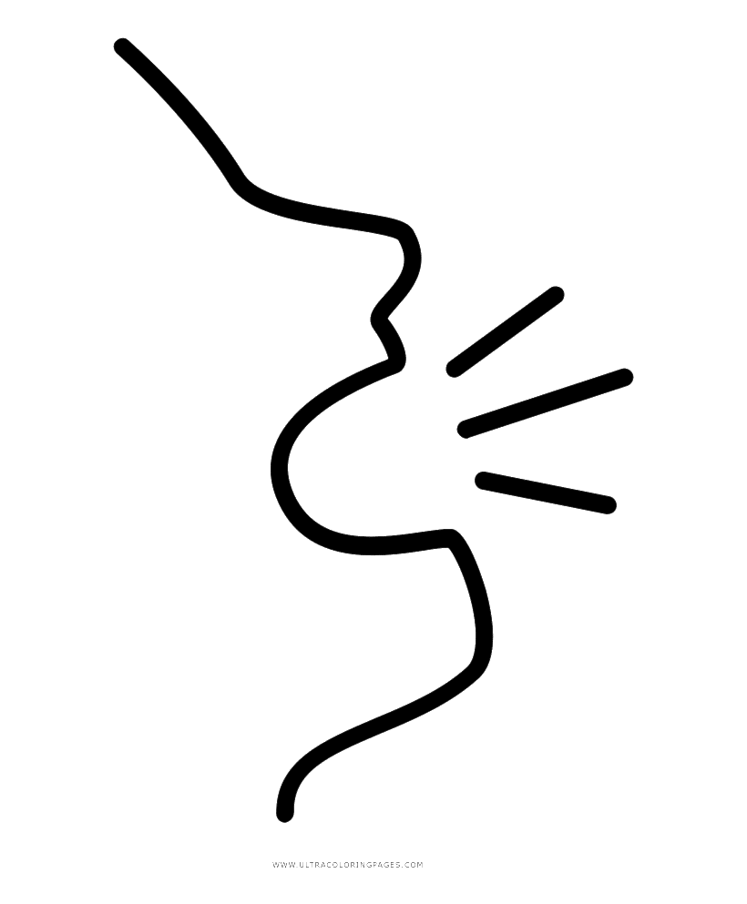
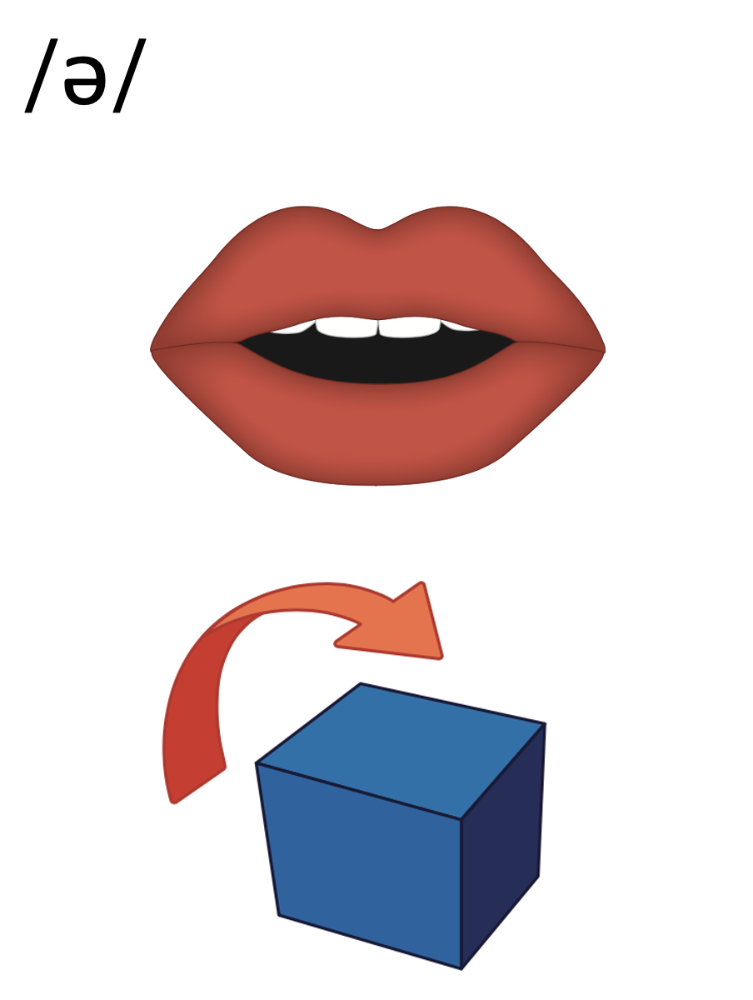
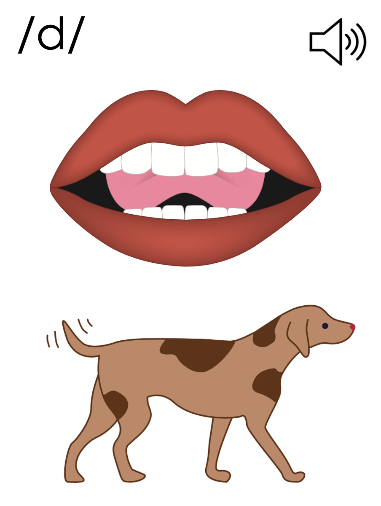
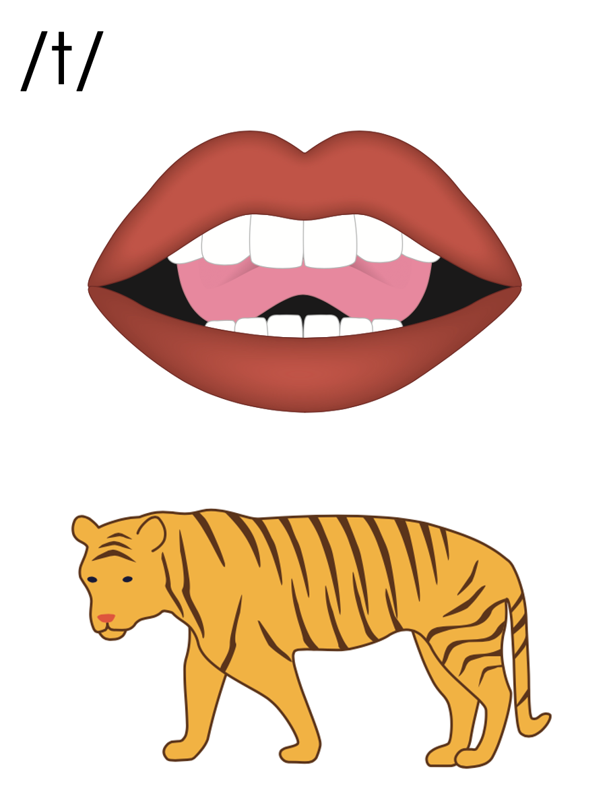
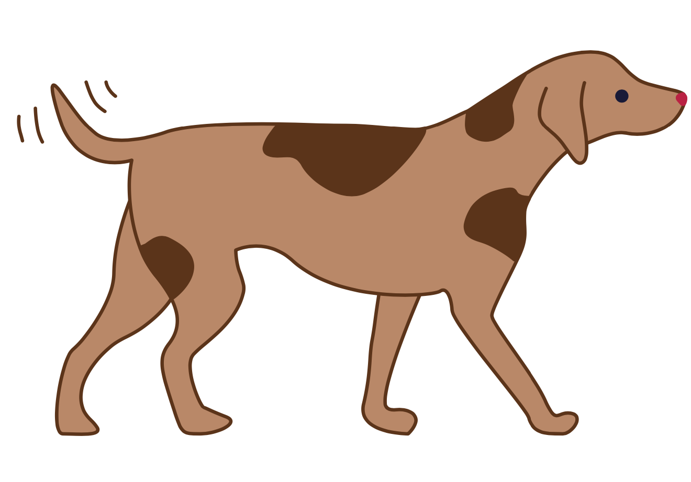
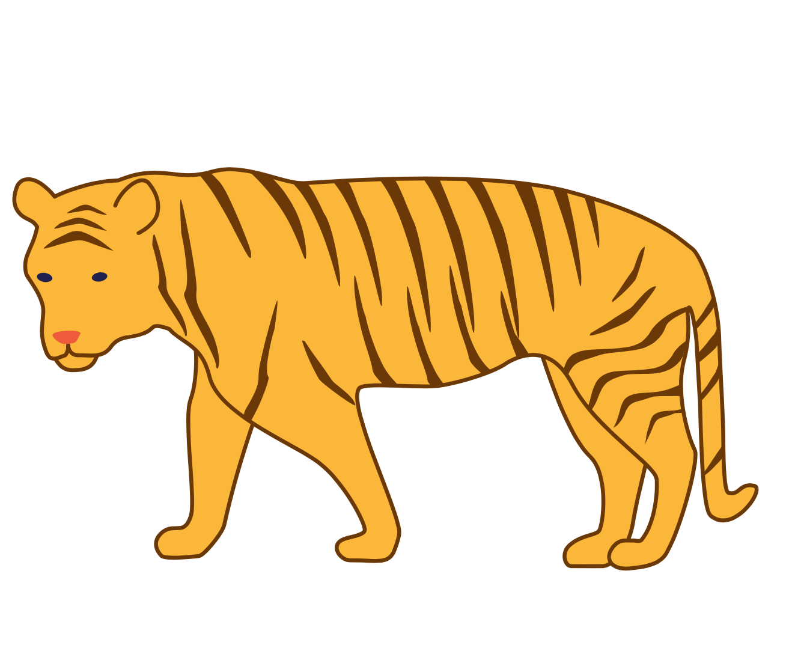
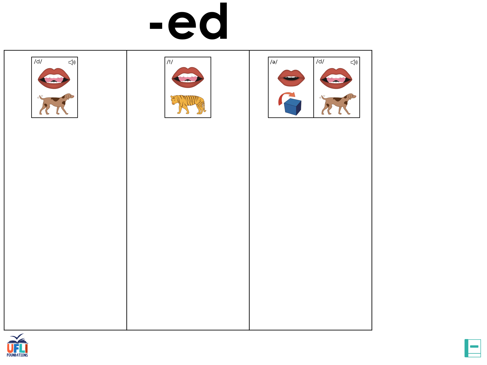
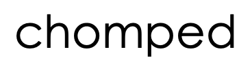
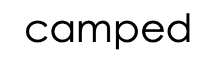
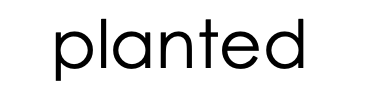

Lesson 64
-ed

ufliteracy.org


Lesson 64
-ed


See UFLI Foundations lesson plan Step 1 for phonemic awareness activity.


See UFLI Foundations lesson plan Step 2 for student phoneme responses.


g
c
a
i
o
e
u
nk
ng
wh
ph
ch
th
sh
ck
s


See UFLI Foundations lesson plan Step 3 for auditory drill activity.

No slides needed for auditory drill.


See UFLI Foundations lesson plan Step 4 for blending drill word chain and grid.
Visit ufliteracy.org to access the Blending Board app.


See UFLI Foundations lesson plan Step 5 for recommended teacher language and activities to introduce the new concept.
Verbs
jump
yell

I jump
I jumped
-ed
I yell
I yelled
-ed



called
filled

-ed
sniffed
helped

-ed
ed
landed
handed
shifted
d
-ed
t
-ed
e

Handwriting paper for letter formation practice. Use as needed.
See UFLI Foundations manual for more information about letter formation.

yelled
smashed
rested

filled
called
asked
crashed
rocked
ended
handed

See UFLI Foundations lesson plan Step 5 for words to spell.
Handwriting paper to model spelling.

See UFLI Foundations lesson plan Step 5 for words to spell.
Handwriting paper for guided spelling practice.


Insert brief reinforcement activity and/or transition to next part of reading block.

Lesson 64
-ed

New Concept Review

See UFLI Foundations lesson plan Step 5 for recommended teacher language and activities to review the new concept.
Verbs
jump
yell
I jump
I jumped
-ed
I yell
I yelled
-ed
called
filled
-ed
sniffed
helped
-ed
ed
landed
handed
shifted
d
-ed
t
-ed
e
kicked
called
wanted
thanked


See UFLI Foundations lesson plan Step 6 for word work activity.
Visit ufliteracy.org to access the Word Work Mat apps.




Display this slide in editing mode. Click and hold to drag each word into the correct column.


See UFLI Foundations lesson plan Step 7 for irregular word activities.
The white rectangle under each word may be used in editing mode. Cover the heart and square icons then reveal them one at a time during instruction.

See UFLI Foundations manual for more information about reviewing irregular words.
one
Lesson 58+
O represents the sounds /w/+/ŭ/.
The final E is silent but does not follow the long vowel VCe pattern.
The white rectangle under the word may be used in editing mode. Cover the heart and square icons then reveal them one at a time during instruction.
once
Lessons 60+
O represents the sounds /w/+/ŭ/.
The white rectangle under the word may be used in editing mode. Cover the heart and square icons then reveal them one at a time during instruction.
two
Lesson 63+
W is silent.
O represents the /ū/ sound.
The TW in TWO can be connected with other TW words related to the number 2 (e.g., TWIN, TWELVE, TWICE). This connection can help children remember why TWO is spelled with a W.
The white rectangle under the word may be used in editing mode. Cover the heart and square icons then reveal them one at a time during instruction.
does
Lesson 63+
O represents the /ŭ/ sound.
ES spells /z/. This is an irregular way to add the -ES ending to a word.
The white rectangle under the word may be used in editing mode. Cover the heart and square icons then reveal them one at a time during instruction.
Handwriting paper for irregular word spelling practice. Use as needed.
See UFLI Foundations manual for more information about reviewing irregular words.
Teach
The orange star indicates these are new irregular words that need to be introduced.
See UFLI Foundations manual for more information about teaching irregular words.
many
Lessons 64-73
A represents either the /ĕ/ sound or the /ĭ/ sound, depending on dialect.
Y /ē/ has not been introduced yet.
The white rectangle under the word may be used in editing mode. Cover the heart and square icons then reveal them one at a time during instruction.
any
Lessons 64-73
A represents either the /ĕ/ sound or the /ĭ/ sound, depending on dialect.
Y /ē/ has not been introduced yet.
The white rectangle under the word may be used in editing mode. Cover the heart and square icons then reveal them one at a time during instruction.

Handwriting paper for irregular word spelling practice. Use as needed.
See UFLI Foundations manual for more information about teaching irregular words.


See UFLI Foundations lesson plan Step 8 for connected text activities.
They listed many things to shop for.
They planted kale and then rested.
He splashed but did not get any kids wet!
See UFLI Foundations lesson plan Step 8 for sentences to write.

The UFLI Foundations decodable text is provided here. See UFLI Foundations decodable text guide for additional text options.
Will the Whale
Once upon a time there was a whale named Will. Will lived with many whales in a pod. Will likes his pod. The pod splashed and jumped in the waves. The pod drifted from place to place.
One time, Will and his pod of whales ended up in a cove. The cove was filled with fish and krill. The fish swam in the waves. The krill drifted with the tide. Will and his pod of whales flicked their fins to splash the fish. The fish flicked their fins back at the whales.
The whales and the fish did not splash any of the krill. And the krill did not splash any of the whales or the fish. The whales and the fish had fun while the krill just drifted.

Insert brief reinforcement activity and/or transition to next part of reading block.